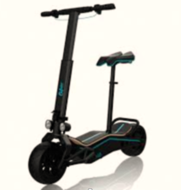

Le meilleur site de moteurs électrique pour les deux roux
Le meilleur site de moteurs électrique pour les deux roux
Roule'Eco, le leader de la trottinette électrique pliable pour adulte Weebot a sélectionné pour vous le must de la trottinette vélo et scouter electrique, pour que vous puissiez rider à pleine vitesse et en toute sécurité. Ultra légère et très pratique notre gamme de notre produit electrique adulte fait appel au meilleures marques tel que Ninebot, Xiaomi, Speedway, Dualtron, Egret ou encore le leader E-TWOW. Vous ne savez pas quel modèle de trottinettes électriques choisir ? Vous pouvez lire cette article. 